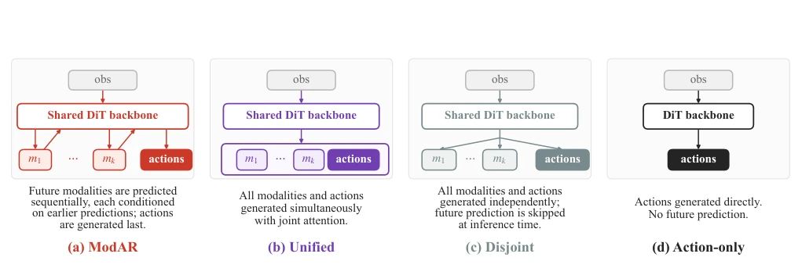
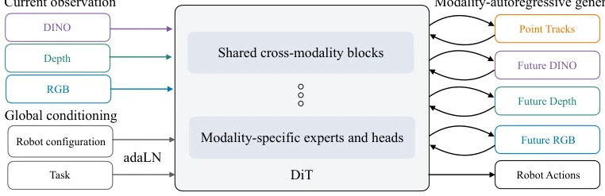
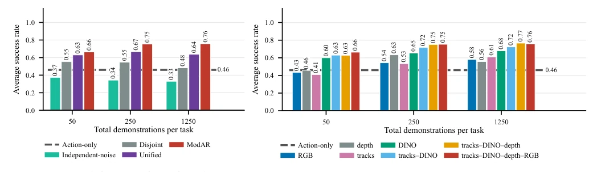
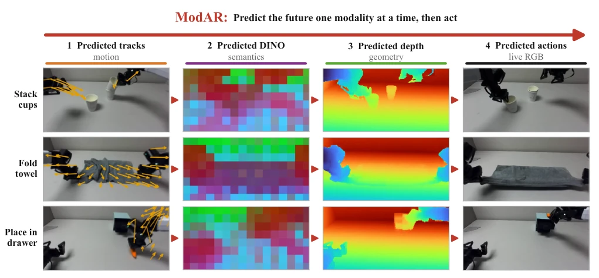
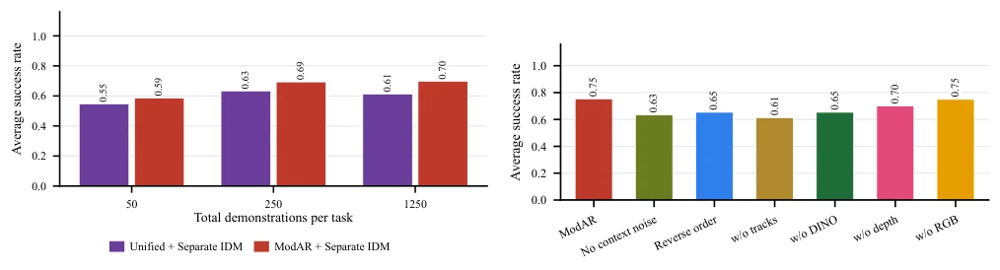
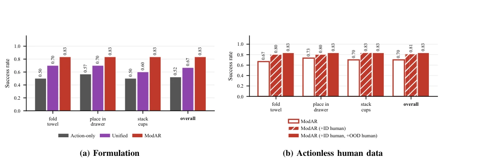

This ModAR paper brings a fresh breeze to the WAM field, turning the task of "predicting the future" into an assembly line process. The authors argue against dumping everything at once into the model, instead letting point clouds, DINO, depth, and RGB queue up sequentially for generation, with action output only at the end. This approach indeed works well in simulation and on real machines, especially saving compute; a 30M parameter small model outperforms a 6B parameter Flex-π, cutting training costs by 20 times. However, most surprisingly, they found that predicting RGB images offers no substantial help to improving success rate, which somewhat challenges the intuition of traditional vision models relying on pixel reconstruction. Of course, serial generation also brings inference latency, and currently it is only verified on simple manipulation tasks, whether it can withstand complex scenarios remains to be seen. Overall, this is a very smart "lazy" strategy in engineering, using structured intermediate representations to replace high-dimensional pixels, but whether "modality autoregressive" is a panacea depends on subsequent expansion to more complex embodied intelligence tasks.
Existing World Action Models (WAM) mostly focus on predicting future RGB images, or jointly generating vision and action like DreamZero [10], Cosmos Policy [11]. Although these methods are effective, RGB reconstruction often focuses on appearance, ignoring geometry, physics, and semantic structures more needed for manipulation tasks. Although existing work attempts to introduce depth [4], point clouds [5], or DINO features [7], how to effectively combine these modalities remains an open problem. Fast-WAM [1] chooses independent prediction, ignoring conditional dependencies between modalities; while Flex-π [9] uses multi-modal but relies heavily on video pre-training, making it hard to isolate the influence of the architecture itself. This paper aims to solve the problem of how WAM combines multi-modal representations, exploring whether autoregressive generation can leverage inductive biases of different modalities better than joint generation, thereby improving policy performance without relying on large-scale pre-training.

Fig. 3. WAM formulations. We draw block diagrams of the evaluated WAM formulations and the Action-only baseline, which differ only in how they couple future prediction with action prediction. ModAR (a) autoregressively denoises future modalities before denoising actions. Unified (b) represents joint-generation WAMs such as DreamZero and Cosmos Policy [10], [11], which denoise future-observation and action streams together. Disjoint (c) represents Fast-WAM [1], which predicts future observations and actions independently and omits future-observation prediction at inference time. Action-only (d) denoises actions directly without predicting future observations. Independent-noise (not drawn) is identical to Unified (b) except during training: rather than applying one shared noise level to all
The core of ModAR is the modality autoregressive generation framework. In the overall process, the model receives current multi-modal observations (RGB, depth, DINO, point clouds) and robot configuration, through a shared DiT backbone network, denoises and generates future modalities one by one in a specific order, finally generating action. Specifically, the generation order is set as point clouds → DINO → depth → RGB → action, using structured information as "draft paper" for subsequent predictions. In architecture, DiT includes cross-modal shared blocks and modality-specific expert blocks, the former fuses information, the latter focuses on details, paired with adaLN injecting task and configuration conditions. During training, Flow Matching objective is adopted, and Context Noise is injected into generated modalities to prevent error accumulation in the autoregressive chain. During inference, clean predictions of each modality are cached and used as context for the next stage, final action prediction is based on all generated future observations, equivalent to an Inverse Dynamics Model (IDM).

Fig. 2. ModAR architecture. We embed the current observation from each modality and pass the resulting tokens into a shared diffusion transformer. The DiT combines cross-modal blocks with modality-specific experts and output heads. Robot configuration and a learned task embedding provide global adaLN conditioning to each DiT layer. ModAR sequentially denoises future modalities, conditioning each on earlier predictions, and denoises actions last.
Experiments are conducted on RoboTwin simulation (6 tasks) and real dual-arm manipulation (3 tasks, such as stacking cups, folding towels). Baselines include Unified, Disjoint, Action-only, and Flex-π. Evaluation metric is task success rate. Simulation results show ModAR achieves highest success rate under all data scales, and benefits most from action-unlabeled data. Ablation experiments show predicting point clouds, DINO, and depth can bring gains, but extra RGB prediction has no consistent improvement. Compared with Flex-π, ModAR achieves 75% success rate with 30M parameters and 20 times less compute, better than Flex-π's 72%. Real robot experiments verify ModAR's generalization under mixed robot and human video data, success rate increases with human data increase, proving effectiveness of multi-modal autoregressive in real scenarios.

Fig. 4. RoboTwin simulation results. Success rates over six tasks with 50 trials per task. We train all models with 50 action-labeled demonstrations per task, then add actionless demonstrations to increase the total demonstration count from 50 to 250 to 1,250. (a) ModAR achieves the highest average success rate among the formulations at each data scale. (b) We find it beneficial to predict future tracks, DINO, and depth, while additionally predicting future RGB provides no consistent gain. RGB (dark blue) matches the typical WAM setting of predicting only future RGB and actions. Independent-noise is identical to Unified except during training: rather than applying one shared noise level to all predicted streams, it samples each stream’s flow timestep independently.
其他图片Other Figures

Fig. 1. We present ModAR, a world-action model (WAM) that predicts future observations as a sequence of multiple modalities. ModAR autoregressively denoises one modality at a time before finally denoising robot actions. We train all models from scratch for controlled comparisons across predicted modalities and training data. We find that additional modalities improve performance, and our multimodal formulation outperforms prior WAM formulations. We further validate ModAR on real-world bimanual manipulation using robot demonstrations and human videos.

Fig. 5. Evaluating predicted futures with a separate IDM. Recall from Sec. III that ModAR’s final action-prediction step acts as an inverse- dynamics model (IDM), mapping its future-observation predictions to actions. In contrast, Unified denoises futures and actions jointly, so its action prediction conditions on partially noisy predicted futures. To remove this asymmetry, we discard both models’ native action predictions and pass their predicted futures to the same separately trained IDM. ModAR still outperforms Unified, showing that its predicted futures are themselves more useful for predicting actions.

Fig. 7. Real-world results. Success rates on real-world tasks, with 30 trials per model per task. (a) All methods use 100 robot demonstrations per task; ModAR and Unified additionally use 200 in-domain actionless human demonstrations and 1,000 out-of-domain EgoDex demonstrations. ModAR achieves the highest success rate on all three tasks. (b) We train separate ModAR models with just 100 robot demonstrations per task, then adding 200 in-domain actionless human demonstrations (used to supervise future-observation predictions, but not action prediction), and then also adding 1,000 out-of-domain human demonstrations from EgoDex (used similarly). The average success rate progressively improves from 70.0% to 81.1% to 83.3%.